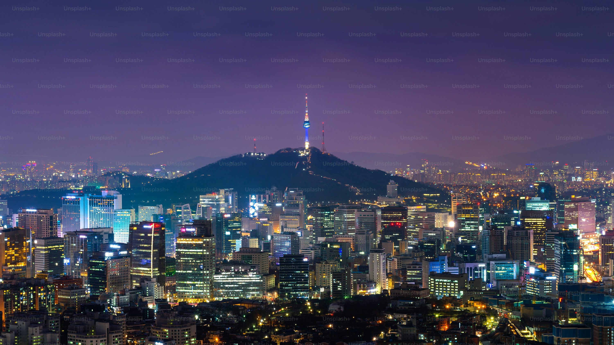
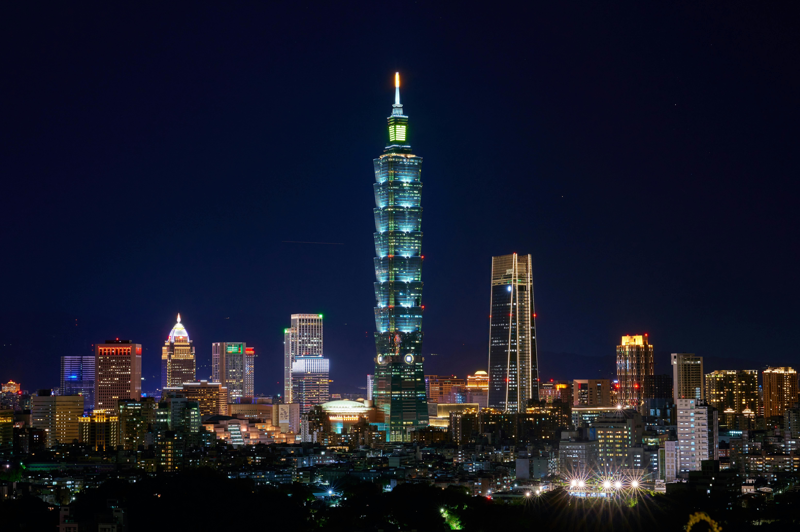
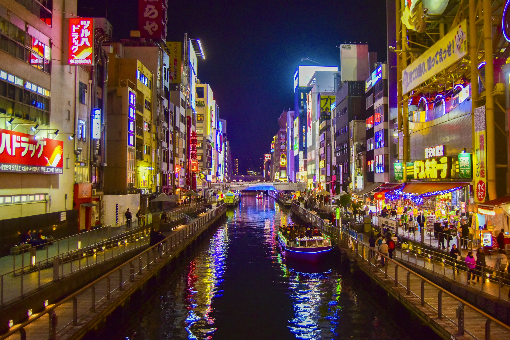
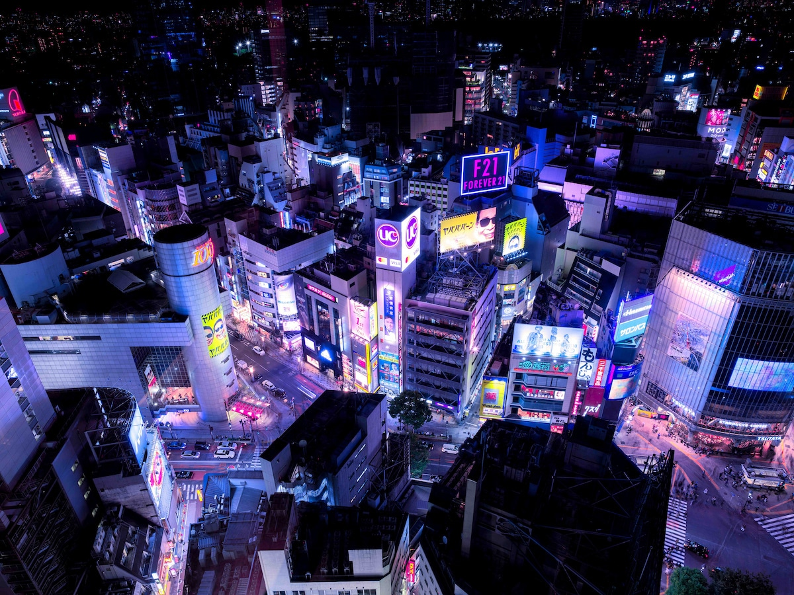

Ciudades Disponibles
El mañana ya llegó, y Tokio nunca deja de evolucionar.

La capital del neón y la hiperconectividad. Tokio es una mezcla de tecnología extrema, tradición arraigada y calles iluminadas por carteles electrónicos en cada rincón. Una ciudad donde el futuro se siente al alcance de la mano.
El mundo mira al futuro, Shanghái lo construye

Un skyline imponente, una ciudad que crece sin límites. Entre rascacielos de cristal y autopistas elevadas, Shanghái es la capital de la velocidad, la innovación y la vida urbana futurista.
Aquí no sobrevivimos al futuro, lo diseñamos.
Donde la cultura digital y la innovación se fusionan. Seúl vibra con la energía de pantallas LED gigantes, inteligencia artificial en cada esquina y una noche repleta de neón.
Nada es estático, todo esta en movimiento.

Calles estrechas llenas de luces, una atmósfera caótica que recuerda a mundos distópicos de ciencia ficción. Hong Kong es el epicentro del cyberpunk en la vida real, con mercados futuristas y tecnología flotando entre el concreto.
El caos urbano nunca ha sido tan precioso.
Una ciudad donde la lluvia, las luces de neón y la arquitectura compacta crean una atmósfera digna de un thriller cyberpunk. Taipei respira tecnología, con mercados nocturnos envueltos en pantallas brillantes y una cultura digital que nunca duerme.
Cuando la energía urbana no tiene límites, Osaka brilla más fuerte.
Es una ciudad donde la tecnología, el comercio y la cultura pop convergen en un ambiente vibrante, iluminado por carteles de neón y calles llenas de vida. Desde Dotonbori hasta los distritos electrónicos, Osaka es un espectáculo visual que nunca descansa.
¿Qué es el estilo Cyberpunk?
El cyberpunk es un subgénero de la ciencia ficción caracterizado por entornos urbanos densos, luces de neón y alta tecnología.